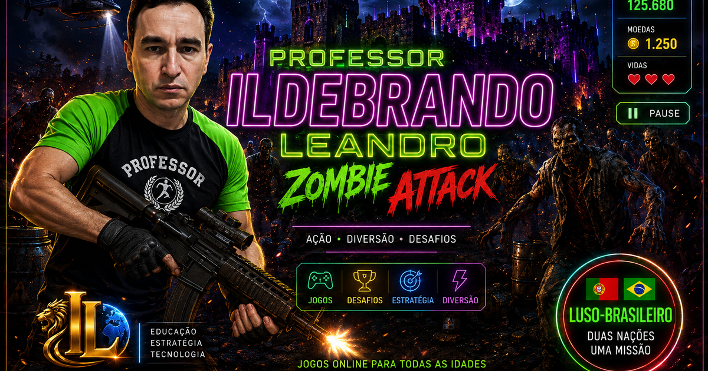
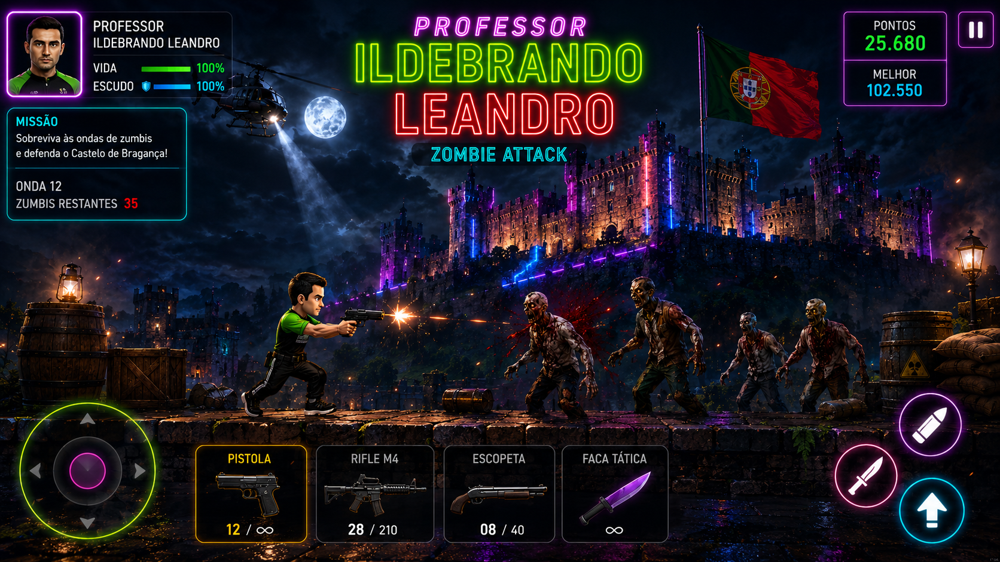

Corrida neon
Neon Racing
Use nitro, colete moedas, desvie do trânsito e supere seus recordes.
Jogar agoraJOGOGAMES APRESENTA
Ação, aventura, corrida e desafios gratuitos para jogar no computador ou celular.
Escolher um jogo
Use nitro, colete moedas, desvie do trânsito e supere seus recordes.
Jogar agora
Corra, pule, troque de armas e enfrente ondas de zumbis.
Jogar agora
Corra, pule, colete moedas, enfrente monstros e use superpoderes.
Jogar agora
Pilote o caça IL-01, enfrente drones e use laser e mísseis.
Jogar agora